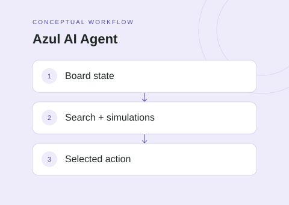

The idea
The Azul agent explores decision-making in a competitive board game. The implementation combines tree search, simulations, and game-specific evaluation to choose actions within a configured time budget.
Project scope
- Represent candidate decisions as a Monte Carlo search tree.
- Use UCB-style selection to balance exploration and exploitation.
- Run simulations and propagate their results through the tree.
- Incorporate heuristic evaluation into action selection.
Technical approach
The Python agent implementation contains selection, expansion, simulation, and backpropagation logic. Heuristics help evaluate the game's tactical choices while the time budget limits how extensively the agent can search before acting.
Scope & limitations
No competition placement or win-rate claim is made here. The algorithm description is based on source inspection rather than reproduced tournament runs. Baseline comparisons would be needed to quantify the value of individual heuristics.